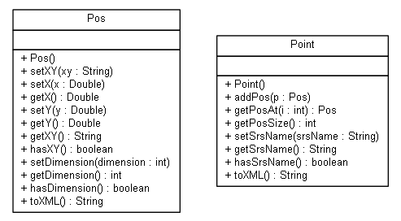

JavaScript is disabled on your browser.
Overview
Package
Class
Use
Tree
Deprecated
Index
Help
Prev Package
Next Package
Frames
No Frames
All Classes
Package nl.mineleni.openls.databinding.gml
OpenLS databinding gml package.
See:
Description
Class Summary
Class
Description
Point
GML Point.
Pos
http://schemas.opengis.net/gml/3.2.1/geometryBasic0d1d.xsd
Package nl.mineleni.openls.databinding.gml Description

OpenLS databinding gml package.
Since:
1.6
Author:
Mark
Overview
Package
Class
Use
Tree
Deprecated
Index
Help
Prev Package
Next Package
Frames
No Frames
All Classes
Copyright © 2012
Ministerie EL&I
. All Rights Reserved.